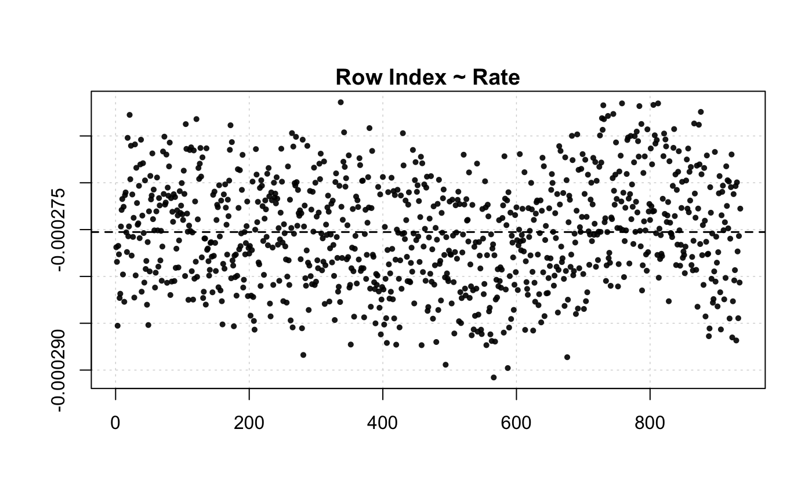

R/calc_rate.ft.R
calc_rate.ft.RdCalculates rate of oxygen uptake in flowthrough respirometry given a flow-rate and both inflow (upstream of the chamber) and outflow (downstream of the chamber) oxygen concentrations. Can return a single rate value, or multiple and mean values based on continuous data.
calc_rate.ft( x = NULL, outflow.o2 = NULL, inflow.o2 = NULL, flowrate = NULL, plot = TRUE )
| x | data frame or object of class |
|---|---|
| outflow.o2 | numeric. Defaults to NULL. This specifies the outflow O2
column if a data frame or |
| inflow.o2 | numeric. Defaults to NULL. This specifies the inflow O2
column if a data frame or |
| flowrate | numeric vector. The flow rate. Must be in Litres per unit
time (s,m,h), for example L/s. The units are not required to be entered in
this function; you will specify them when you perform conversions later in
|
| plot | logical. Defaults to TRUE. Plots the data. |
An object of class "calc_rate.ft".
Input can be numeric values or vectors - see examples. In addition, a
data.frame or inspect object can be entered. In this case outflow.o2
and inflow.o2 are indices indicting the columns containing these data.
Note, an inflow.o2 column must be present in the data.frame, even if this
is a single fixed value repeated to the correct length. Note, a numeric time
elapsed column can be present, but is not required. In flowthrough data,
uptake rate calculations use O2 delta and the flow rate.
There are no units involved in calc_rate.ft. This is a deliberate decision.
Units are called in a later function when absolute and/or mass-specific
rates of oxygen use are computed in convert_rate() and convert_DO().
# Single numeric values calc_rate.ft(inflow.o2 = 8.88, outflow.o2 = 8.17, flowrate = 0.000039)#>#> Rate: #> [1] -2.769e-05# Numeric values and vector data("flowthrough.rd") calc_rate.ft(inflow.o2 = 8.88, outflow.o2 = flowthrough.rd$o2.out, flowrate = 0.000039)#>#> Rate (first 6): #> [1] -2.770054e-05 -2.766099e-05 -2.773002e-05 -2.766186e-05 -2.753788e-05 #> [6] -2.779502e-05 #> #> Mean: #> [1] -2.750848e-05# Vectors data("flowthrough.rd") calc_rate.ft(inflow.o2 = flowthrough.rd$o2.in, outflow.o2 = flowthrough.rd$o2.out, flowrate = 0.000039)#>#> Rate (first 6): #> [1] -2.768858e-05 -2.784439e-05 -2.852644e-05 -2.767369e-05 -2.776415e-05 #> [6] -2.823009e-05 #> #> Mean: #> [1] -2.752597e-05# A data frame data("flowthrough.rd") calc_rate.ft(flowthrough.rd, outflow.o2 = 2, inflow.o2 = 3, flowrate = 0.00039)#> #>#> Rate (first 6): #> [1] -0.0002768858 -0.0002784439 -0.0002852644 -0.0002767369 -0.0002776415 #> [6] -0.0002823009 #> #> Mean: #> [1] -0.0002752597